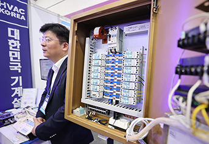
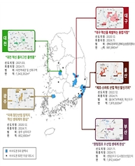
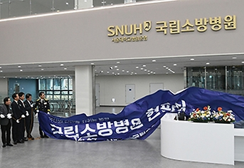
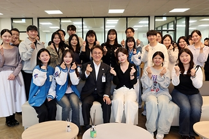

-  물류창고·전통시장 '아크차단기' 의무 설치…"화재 예방설비 강화" 앞으로 새로 짓거나 개보수하는 물류창고와 전통시장에는 '아크차단기'를 의무적으로 설치해야 한다.'아크차단기'는 전기화재를 일으키는 주요 원인인 '아크(전기불꽃)'가 발생하면 전기를 자동으로 차단해 화재를 방지하는 장치로, 정부는 이를 통해 전기화재 예방설비를 강화할 방침이다. 기후에너지환경부는 이같은 내용을 포함한 '한국전기설비규정(KEC, Korea Electro-technical Code)'을 개정해 오는 30일자로 공고한다고 밝혔다.서울 강남구 코엑스에서 열린 '대한민국 기계설비전시회(HVAC KOREA 2025)'의 한 부스에서 관계자가 불꽃 방지 차단기를 설명하고 있다. 2025.4.9 (사진=저작권자(c) 연합뉴스, 무단 전재-재배포 금지)기후부는 화재의 취약성과 사회적 파장 등을 감안해 물류창고와 전통시장에 아크차단기를 우선 도입하기로 했다. 이는 연평균 발생한 전기화재 9952건 중 주거시설을 제외한 전통시장음식점포함(7.5%)과 물류창고(4.5%)의 비중이 크고, 특히 재산피해는 물류창고가 가장 많은 등 이곳이 화재의 취약성과 사회적 파장이 크기 때문이다. 다만 영세업자의 부담을 감안해 계약전력 100kW 이상인 시설로 한정하고, 준비기간 등을 고려해 2년 동안 시행을 유예해 2028년부터 적용하기로 했다.아울러 기후부는 아크차단기 의무설치 외에도 40여 건의 한국전기설비규정 기준을 개정했으며 산업현 2025.12.29 기후에너지환경부
-  정부, 도심융합특구 종합계획 수립…청년·기업 위한 혁신공간 조성 정부가 지역 균형성장을 위한 과제의 일환으로 청년과 기업이 선호하는 혁신공간을 조성하는 도심융합특구 종합발전계획을 선보였다. 국토교통부는 향후 10년 간의 도심융합특구 정책방향을 담은 '제1차 도심융합특구 종합발전계획'(2026~2035)을 수립해 26일 고시했다. 종합발전계획은 지난 4월 시행한 도심융합특구법 제7조에 따라 융합특구의 체계적인 발전을 위해 지방정부 의견 수렴과 전문가 자문 등을 거쳐 이번에 처음으로 수립했다. 5대 광역시 도심융합특구.(국토교통부 제공) 도심융합특구 종합발전계획은 먼저... 2025.12.26 국토교통부
-  국내 첫 '국립소방병원' 문 열어…소방공무원·지역 공공의료 수행 소방공무원의 직업적 특수성을 고려한 맞춤형 진료와 연구를 수행하는 국내 최초의 소방 특화 종합병원 '국립소방병원'이 진료를 시작했다.소방청은 지난 24일 충북 혁신도시에 위치한 국립소방병원 현판식을 개최하고, 소방공무원의 건강관리와 지역 공공의료 서비스를 위한 본격적인 운영의 시작을 알렸다.이에 국립소방병원은 소방공무원의 건강관리는 물론 충북 혁신도시 내 부족한 공공의료 인프라를 확충해 지역 주민들에게도 양질의 의료 서비스를 제공하는 거점 병원 역할을 수행한다.김승룡 소방청장 직무... 2025.12.26 소방청
-  청년 43만 명 이상에 주거비 지원…'2차 청년정책 기본계획' 확정 정부는 26일 김민석 국무총리 주재로 제17차 청년정책조정위원회를 열어 앞으로 5년 동안의 청년정책의 마스터플랜인 제2차 청년정책 기본계획을 심의해 확정했다. 이날 위원회에서는 신규 민간위원인 황인국 위원을 위촉하고 제2차 청년정책 기본계획('26~'30), '25년 중앙행정기관 및 광역지자체 청년정책 추진실적 평가계획(서면) 등 2개의 안건을 심의·확정했다. 이번 2차 기본계획은 '첫걸음부터 함께, 모든 청년이 만들어가는 미래'라는 비전 아래 5년마다 수립하는 범정부 중장기 종합계획으로, 일자리, 교육·직업훈련, ... 2025.12.26 국무조정실
-
 전국 청소년수련시설 '9900명 청소년들과 겨울방학 캠프 떠나요' 성평등가족부는 겨울방학을 맞아 청소년을 대상으로 국립청소년수련시설과 지역 청소년시설에서 청소년 체험활동 프로그램을 운영한다고 26일 밝혔다. 국립청소년수련시설 7곳에서는 농어촌 지역, 도서벽지, 인구감소 지역 등의 취약계층 청소년을 대상으로 2박 3일 일정으로 동계캠프를 연다. 이 프로그램에는 사전 예약으로 모집한 지역아동센터, 학교, 방과후아카데미 등 290개 기관·단체의 청소년 9900여 명이 참여할 예정이다. 원민경 성평등가족부장관이 서울 종로구 정부서울청사에서 열린 '학교 밖 청소년 정부청사 초청행사'에서... 2025.12.26 성평등가족부
전국 청소년수련시설 '9900명 청소년들과 겨울방학 캠프 떠나요' 성평등가족부는 겨울방학을 맞아 청소년을 대상으로 국립청소년수련시설과 지역 청소년시설에서 청소년 체험활동 프로그램을 운영한다고 26일 밝혔다. 국립청소년수련시설 7곳에서는 농어촌 지역, 도서벽지, 인구감소 지역 등의 취약계층 청소년을 대상으로 2박 3일 일정으로 동계캠프를 연다. 이 프로그램에는 사전 예약으로 모집한 지역아동센터, 학교, 방과후아카데미 등 290개 기관·단체의 청소년 9900여 명이 참여할 예정이다. 원민경 성평등가족부장관이 서울 종로구 정부서울청사에서 열린 '학교 밖 청소년 정부청사 초청행사'에서... 2025.12.26 성평등가족부